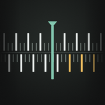

GrainmeterEin Belichtungsmesser für Analogfotografie.
Richte dein iPhone auf das Motiv und lies Blende und Zeit für den Film in deiner Kamera ab. Auf zwei verschiebbaren Skalen steht jede Blende neben ihrer Zeit, wie auf der Rechenscheibe eines alten Belichtungsmessers. Spotmessung, Filter, veröffentlichte Schwarzschild-Daten und ein Logbuch gibt es mit einem einmaligen Kauf. Kein Abo, keine Werbung, kein Konto.